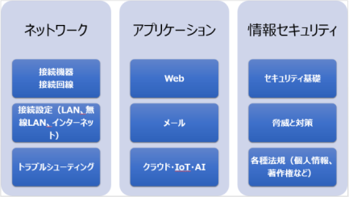

社内ITサポーター養成講座
この講座は、社内のIT担当者、IT機器・ソフトなどのサポートスタッフ、これからITの仕事に就きたい方が対象です。
パソコン・サーバー・クラウドなど、企業でIT機器・サービスを導入する際に考慮する必要のある、ネットワーク設定、情報セキュリティについて学びます。
実際の機器設定を確認しながら進めていきますので、企業内のIT構成がイメージしやすくなります。
「.com Master ADVANCE ★★（ダブルスター）」資格にも対応しています。
